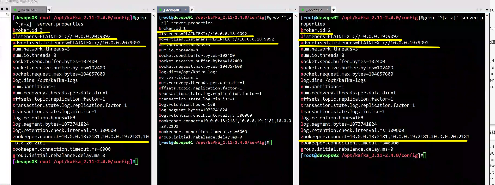
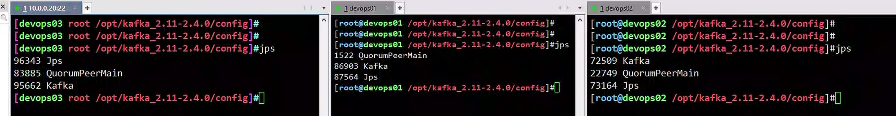
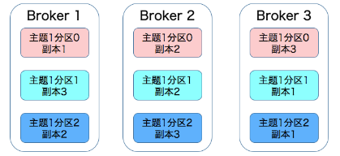
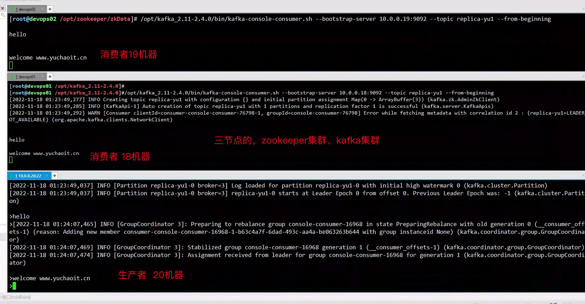
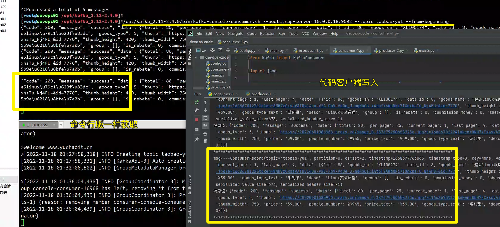
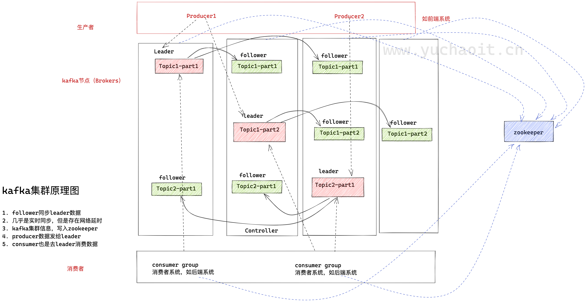

kafka集群
对于运维需要掌握的kafka基础操作，读写管理掌握后，下一步就是集群部署搭建了。
1. kafka天然支持集群
2. kafka将集群状态写入zookeeper。
集群部署
1. 确保zk启动
[devops03 root /opt/kafka_2.11-2.4.0]#netstat -tunlp|grep 2181
tcp6 0 0 :::2181 :::* LISTEN 83885/java
[devops03 root /opt/kafka_2.11-2.4.0]#
2.部署多机kafka集群，三节点（也可以基于端口区分的伪集群）
3.修改配置文件server.properties，修改如下参数三个机器区分开即可
broker.id=3
log.dirs=/opt/kafka-logs
zookeeper.connect=10.0.0.18:2181,10.0.0.19:2181,10.0.0.20:2181
listeners=PLAINTEXT://10.0.0.20:9092
advertised.listeners=PLAINTEXT://10.0.0.20:9092
4.启动3节点的kafka
/opt/kafka_2.11-2.4.0/bin/kafka-server-start.sh /opt/kafka_2.11-2.4.0/config/server.properties &
5.验证kafka进程
netstat -tunlp|grep 9092

验证进程jps

默认参数解释
broker.id=0 #当前机器在集群中的唯一标识，和zookeeper的myid性质一样
port=19092 #当前kafka对外提供服务的端口默认是9092
host.name=192.168.7.100 #这个参数默认是关闭的，在0.8.1有个bug，DNS解析问题，失败率的问题。
num.network.threads=3 #这个是borker进行网络处理的线程数
num.io.threads=8 #这个是borker进行I/O处理的线程数
log.dirs=/opt/kafka/kafkalogs/ #消息存放的目录，这个目录可以配置为“，”逗号分割的表达式，上面的num.io.threads要大于这个目录的个数这个目录，如果配置多个目录，新创建的topic他把消息持久化的地方是，当前以逗号分割的目录中，那个分区数最少就放那一个
socket.send.buffer.bytes=102400 #发送缓冲区buffer大小，数据不是一下子就发送的，先回存储到缓冲区了到达一定的大小后在发送，能提高性能
socket.receive.buffer.bytes=102400 #kafka接收缓冲区大小，当数据到达一定大小后在序列化到磁盘
socket.request.max.bytes=104857600 #这个参数是向kafka请求消息或者向kafka发送消息的请请求的最大数，这个值不能超过java的堆栈大小
num.partitions=1 #默认的分区数，一个topic默认1个分区数
log.retention.hours=168 #默认消息的最大持久化时间，168小时，7天
message.max.byte=5242880 #消息保存的最大值5M
default.replication.factor=2 #kafka保存消息的副本数，如果一个副本失效了，另一个还可以继续提供服务
replica.fetch.max.bytes=5242880 #取消息的最大直接数
log.segment.bytes=1073741824 #这个参数是：因为kafka的消息是以追加的形式落地到文件，当超过这个值的时候，kafka会新起一个文件
log.retention.check.interval.ms=300000 #每隔300000毫秒去检查上面配置的log失效时间（log.retention.hours=168 ），到目录查看是否有过期的消息如果有，删除
log.cleaner.enable=false #是否启用log压缩，一般不用启用，启用的话可以提高性能
zookeeper.connect=192.168.7.100:12181,192.168.7.101:12181,192.168.7.107:1218 #设置zookeeper的连接端口
集群副本集
1. kafka的副本集就是将日志复制多份，数据冗余，备份
2. 支持基于每个topic设置副本集
3. 通过config设置默认副本集数量
1.Broker指的是kafka进程，就是一台kafka节点
2.集群会保证每个broker均衡至少有一个topic-partition
3. 为每个partition设置2个副本集，当有生产者写入消息到Broker1的topic，会同步到其他节点的日志文件里
4. 支持给partition单独设置副本集
Kafka 是有主题概念的，而每个主题又进一步划分成若干个分区。副本的概念实际上是在分区层级下定义的，每个分区配置有若干个副本。
所谓副本（Replica），本质就是一个只能追加写消息的提交日志。根据 Kafka 副本机制的定义，同一个分区下的所有副本保存有相同的消息序列，这些副本分散保存在不同的 Broker 上，从而能够对抗部分 Broker 宕机带来的数据不可用。
在实际生产环境中，每台 Broker 都可能保存有各个主题下不同分区的不同副本，因此，单个 Broker 上存有成百上千个副本的现象是非常正常的。
接下来我们来看一张图，它展示的是一个有 3 台 Broker 的 Kafka 集群上的副本分布情况。
从这张图中，我们可以看到，主题 1 分区 0 的 3 个副本分散在 3 台 Broker 上，其他主题分区的副本也都散落在不同的 Broker 上，从而实现数据冗余。

测试副本集集群
1.创建topic查看副本集状态
# --replication-factor 2 复制2份
# --partitions 1 创建一个分区
/opt/kafka_2.11-2.4.0/bin/kafka-topics.sh --create --zookeeper localhost:2181 --replication-factor 2 --partitions 1 --topic replica-yu1
2.查看topic
/opt/kafka_2.11-2.4.0/bin/kafka-topics.sh --list --zookeeper localhost:2181
3.生产者
/opt/kafka_2.11-2.4.0/bin/kafka-console-producer.sh --broker-list 10.0.0.20:9092 --topic replica-yu1
4.消费者
/opt/kafka_2.11-2.4.0/bin/kafka-console-consumer.sh --bootstrap-server 10.0.0.18:9092 --topic replica-yu1 --from-beginning
/opt/kafka_2.11-2.4.0/bin/kafka-console-consumer.sh --bootstrap-server 10.0.0.19:9092 --topic replica-yu1 --from-beginning

python客户端
https://support.huaweicloud.com/devg-kafka/kafka-python.html
生产者
from kafka import KafkaProducer
import json
producer = KafkaProducer(bootstrap_servers=['10.0.0.19:9092'], value_serializer=lambda m: json.dumps(m).encode())
data={"code":200,"message":"success","data":{"total":80,"per_page":25,"current_page":1,"last_page":4,"data":[{"id":86,"goods_sn":"XL100174","cate_id":8,"goods_name":"超哥linux私房菜","goods_type":5,"thumb":"https://20220601085953.grazy.cn/image_0.2874792506587236.jpg?e=1668670122&token=8NH7zCxssVAIDv14uo-V2C-PpV-Vg0e_J-mqMbCs:i4tpfYAWdNki7TGnxhsTu_Nj4FU=&id=7770","thumb_height":420,"thumb_width":750,"price":"39.00","people_number":29945,"price_text":"¥39.00","goods_type_text":"系列课","desc":"Linux实战课程","group":[],"is_rebate":0,"commission_money":0,"share_money":0}]}}
# 写入topic，json数据，写入的是bytes，指定分区号
future = producer.send('taobao-yu1' , value= data)
print(future.get(timeout= 10))
消费者
from kafka import KafkaConsumer
import json
consumer = KafkaConsumer(group_id='group2', bootstrap_servers=['10.0.0.20:9092'],
value_deserializer=lambda m: json.loads(m.decode()))
# print(consumer.config)
consumer.subscribe(topics=['taobao-yu1'])
for msg in consumer:
print(f'msg----{msg}')
print(f'消息值：{msg.value}')
print('*'*100)

集群原理
1, broker ，kafka进程所在节点
2. leader，集群主节点，9092端口默认，用于处理消息的接收、消费等请求
3. follower，备份消息数据

集群细节功能
1. kafka和zookeeper心跳故障
2. follower消息落后leader太多
3. kafka默认会移除故障节点
4. kafka在集群模式下基本不会因为节点故障而丢失数据
5. kafka对内部消息自动负载均衡，保证消息在多个节点均衡存储，防止节点热点过高。
6. zk是用多数投票，选举新的leader
7. kafka并没有采用投票选举leader
关于kafka的运维基础操作就到这，更多的功能还是以代码结合处理。
以及更多如何基于k8s部署kafka环境。